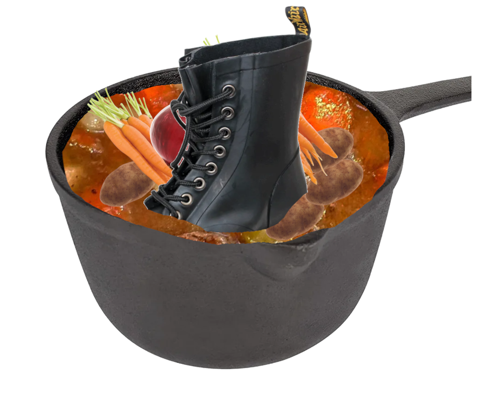

The Rubber Boot Stew Crew
Recent Posts
The name "Rubber Boot Stew" is a paradoxical expression that speaks to the complexities of the human condition. It symbolizes the idea that even the most seemingly mundane and unappealing things in life can have profound meaning when viewed from the right perspective. The image of a rubber boot, often associated with manual labor and the working class, is elevated to the level of a stew, a dish that is warm, comforting, and nourishing. This represents the idea that even the most humble and unassuming aspects of life can hold great value and significance. The name "Rubber Boot Stew" is a reminder to appreciate the beauty and depth in all things, no matter how unconventional they may seem.